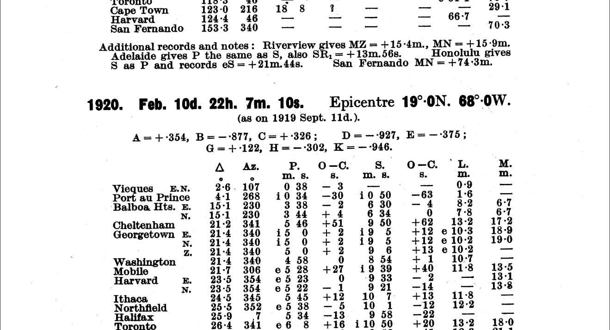

Station Bulletins#
Archives of scanned instrumental seismic bulletins pertaining to either a single station or network.
For more useful links see the ESC Legacy Seismograms website.
ISC Electronic Archive of Station and Network Bulletins#
Station and network bulletins are available for download from the International Seismological Centre (ISC).
Data are provided from the following:
EuroSeismos project: http://storing.ingv.it/es_web/
Seismo Archives, IRIS: https://ds.iris.edu/seismo-archives/
Istituto Nazionale di Geofisica e Vulcanologia (INGV): http://storing.ingv.it/bulletins/ISC-GEM/
University of Uppsala, Sweden: http://www.axelhamberg.se/bulletin/Engelsk.htm
Qi Qu collection: https://drive.google.com/drive/folders/1ocBIDdMPWXilYUdy90NzQOz8sB22Baw1
Download: http://www.isc.ac.uk/printedStnBulletins/index.php
In addition, Instituto Geográifico Nacional (IGN) has created a new, exhaustive catalog of old seismographs operated at Spanish observatory sites. The catalog describes instruments operating in Spain up to the 1960’s which recorded a graphical representation of ground motion.
Acknowledgements
an incomplete set of acknowledgements for the above resources
Original bulletins of International Seismological Summary (ISS) have been obtained thanks to funding by the US National Science Foundation through grant EAR-9725140 (Villasenor et al., 1997) and have been scanned and collected by SGA Storia Geofisica Ambiente (Bologna) thanks to funding provided by the Istituto Naional di Geofisica e Vulcanologia (Rome), in the frame of the EUROSEISMOS project.
References
Domenico Di Giacomo, Daniela Olaru, Adrian Armstrong, James Harris, Dmitry A. Storchak; The ISC Electronic Archive of Printed Station and Network Bulletins. Seismological Research Letters 2021; doi: https://doi.org/10.1785/0220210262
Taiwan#
The Earthquake Research Institute (ERI) of the University of Tokyo has archived records from Taiwan along with special reports of earthquakes in Formosa (Taiwan). These include:
Seismic reports of the Taiwan Meteorological Observatory (1906-1912)
Annual reports of meteorological data in Taiwan (1915-1927)
The seismic bulletin of Taiwan (1921-1928)
Papers and reports of the 1935 Formosa earthquake (ERI, Tokyo Imperial University)
and more.
Access the complete list: http://wwweic.eri.u-tokyo.ac.jp/record-W/taiwan-e.html
References
Satake, K., H. Tsuruoka, S. Murotani, and K. Tsumura (2020). Analog Seismogram Archives at the Earthquake Research Institute, the
University of Tokyo, Seismol. Res. Lett. 91, 1384–1393, doi: 10.1785/0220190281.
Hathi Trust Digital Library#
The Hathi Trust Digital Library provides access to a number of station bulletins worldwide. This includes:
U.S. Coast and Geodetic Survey. Seismological bulletin. Washington, D.C.: U.S. Dept. of Commerce, Coast and Geodetic Survey. [access]
John Carroll University. Seismological Observatory. Seismological bulletin. Cleveland, Ohio: The Observatory.[access]
Environmental Research Laboratories (U.S.)., National Ocean Survey., U.S. Coast and Geodetic Survey. Antarctic seismological bulletin. Washington: The Survey. [access]
Dominion Observatory (Canada). Seismological bulletin. Ottawa.[acess]
Mitchell, B. J. (Brian James)., University of Minnesota. Seismic Station. Seismological bulletin. Minneapolis: The Station.[access]
Lembaga Meteorologi dan Geofisika., Indonesia. Departemen Perhubungan., Indonesia. Djawatan Meteorologi dan Geofisik. Seismological bulletin. Djakarta: Meteorological & Geophysical Service. [access]
Makhon le-meḥḳere nefṭ ṿe-geʼofisiḳah. Agaf saismologyah. (1983). Seismological bulletin. Holon, Israel: The Institute.[access]
India. Meteorological Department. Division of Seismology., India. Meteorological Department. Seismological bulletin. [New Delhi]: Govt. of India, Meteorological Dept.. [access]
Institute of Geological Sciences (Great Britain). Seismological bulletin. London: Her Majesty’s Stationery Office. [access]
Canada. Earth Physics Branch., Dominion Observatory (Canada)., Ottawa. Dominion Observatory. Seismological bulletin. Ottawa: Dept. of Energy, Mines and Resources, Earth Physics Branch.[access]
University of Washington. Geology Dept. Seismological bulletin. Seattle. [access]
Zhong yang di zhi diao cha suo (China). Chiufeng Seismic Station., Guo li Beiping yan jiu yuan. Di zhi xue yan jiu suo. Seismological bulletin … Peiping: Published by the Geological survey of China (under the Ministry of industries) and the Section of geology of the National academy of Peiping. [access] *Philippines (Commonwealth). Weather Bureau., Manila Observatory., Philippines. Weather Bureau. Seismological bulletin. Manila. [access]
This list is not exhaustive and may not list other resources in Europe, Asia, and the Americas.